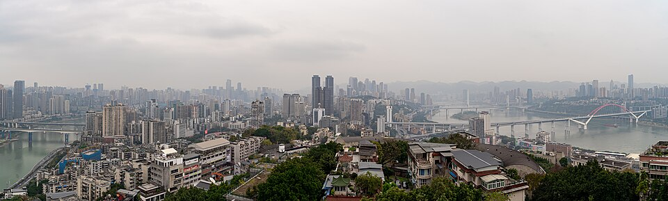

★ 兩篇以上攻略或官方都提到；單一來源 只有一篇。 大眾點評、小紅書、知乎擋爬蟲，人均多半未查到；有寫的是攜程或去哪兒的數字（2026/11 查）。點菜記得說「微辣」。
🌉 鵝嶺棧橋 → 二廠 → 李子壩
目標
① 鵝嶺空中棧橋：懸崖上的步道，可以俯看李子壩穿樓、嘉陵江 ★ ② 瞰勝樓（兩江樓）：登樓看兩江 ★ ③ 鵝嶺二廠「愛情天台」（City Radio，《從你的全世界路過》取景）★。佛圖關公園南門旁進棧橋、鵝嶺公園爬山廊旁出 ★；棧橋單向、不能逆走 單一來源，所以順序只能是「棧橋 → 公園 → 二廠 → 李子壩」★。從瞰勝樓之後一路往下走：二廠到李子壩大約 0.5 km 降約 150 m（研判，衛星高程），大多是石階。
路線（09:55～12:25，步行共約 1.7 km、約 21 分）
- 起09:55 鵝嶺站 1 號口：出站往西走到佛圖關公園南門，約 100 m（舊點評）；地圖上約 2 分（直線，實際路徑未知）
- 110:00 棧橋入口（佛圖關公園南門旁） ★：排隊入場。入口可以現場掃碼登記 ★；持台胞證者要到遊客服務點預約 單一來源，服務點位置與當天名額未查到。入口旁有廁所（OSM）。棧橋全長 460 m，部分路段是鏤空格柵，耳機、鑰匙、手機、零錢會掉下去 單一來源 沒有合格照片：看照片 →
- 210:40 棧橋出口（鵝嶺公園爬山廊旁）：在棧橋上約 6 分路程，加上排隊、拍照共排 40 分。出棧橋就是鵝嶺公園
- 310:50 瞰勝樓（兩江樓） ★：塔底買票，沿窄螺旋石梯爬約 5～7 層 單一來源；登樓費 5～10 元與 5 元兩說，無官方值。停到 11:10；走到二廠約 8～10 分，11:20 是最晚到（步行約 4 分）

Hugo LUC・CC BY-SA 4.0・Wikimedia Commons（2025-12，「鵝嶺公園的塔上」，研判是瞰勝樓） - 411:20 鵝嶺二廠文創公園 ★：從兩江樓往東側小路下山約 8～10 分 單一來源（地圖上約 2 分，直線，實際路徑未知）。愛情天台 ★；建議停 1～2 小時 ★，這裡只排得下 45 分，12:05 從北門出 沒有合格照片：看照片 →
- 512:10 三層馬路（嘉陵新路）：北門的陡石階往下 ★。三層馬路是從李子壩站下方沿山勢一層一層往上的路，抗戰時期是別墅區 單一來源；李子壩與二廠之間走三層馬路、階梯多 ★，可以從另一側看輕軌穿樓 單一來源。哪三層各是哪條路：未查到（這個點是研判）
- 終12:25 李子壩站觀景平台入口：再往下到李子壩正街（地圖上約 2 分，直線，實際路徑未知）；二廠北門到李子壩約 15 分 ★，這裡給 20 分。旁邊是狹長的李子壩抗戰遺址公園（全天、免費，攜程、去哪兒），往西深入會折返，不排
時刻是估算（步行用 OSRM 距離 ÷ 80 m／分，停留時間自己分配；OSRM 不算爬坡，石階實際更久）；座標取自 OpenStreetMap。
時間
- 棧橋 9:00–18:00、免費（新華、本地寶）；17:40 停止入場、週一關閉（Wander in China，另一篇只有摘要）。12/10 是週四
- 週末入口排隊可能較長（Wander in China）；12/10 是平日
- 晚霞夏天較易見，其他季節多霧 單一來源；12 月重慶偏陰（研判，氣候統計）
- 二廠店家上午幾點開：未查到（部分店 21:00 關 單一來源）
實用
- 鵝嶺公園 7:00–22:00、免費（本地寶）；二廠攜程寫全年全天、免費，天台收不收費兩說，現價未查到
- 棧橋禁帶輪椅、嬰兒車、滾輪箱、無人機，禁止長時間停留、直播（新華）
- 廁所（OSM）：棧橋入口旁、瞰勝樓附近、二廠北側、李子壩觀景平台附近；寄物：未查到
吃的、文創
- 順路：二廠裡近五年被兩篇以上推薦的店未查到；攜程自動列表有大王油茶（¥27，3.3 分／8 則）、Caver·重庆精酿&老式重庆菜（¥91，4.5 分／2 則），不算攻略推薦。李子壩本身吃的少，建議到二廠吃 單一來源
來源：本地寶 2026-10、Wander in China 2026-06、新華網 2025-11、攜程遊記 2024-06、攜程遊記 2024-10、攜程二廠、攜程李子壩公園。筆記：1209_洪崖洞鵝嶺攻略、1209_重慶動線、1210_鵝嶺_園內路線